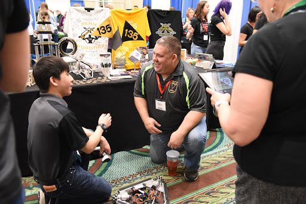
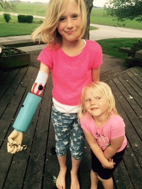
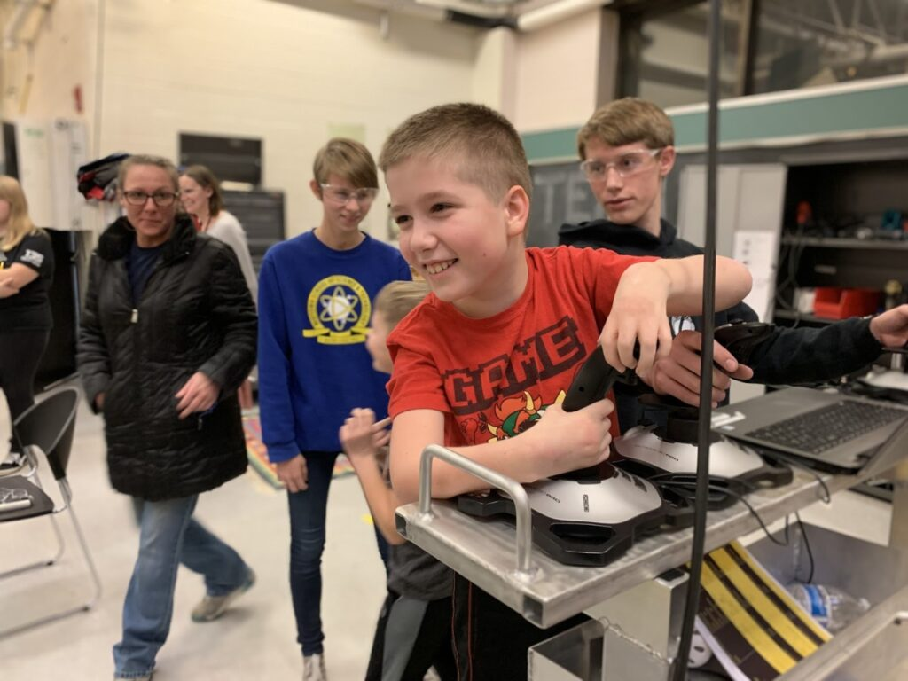
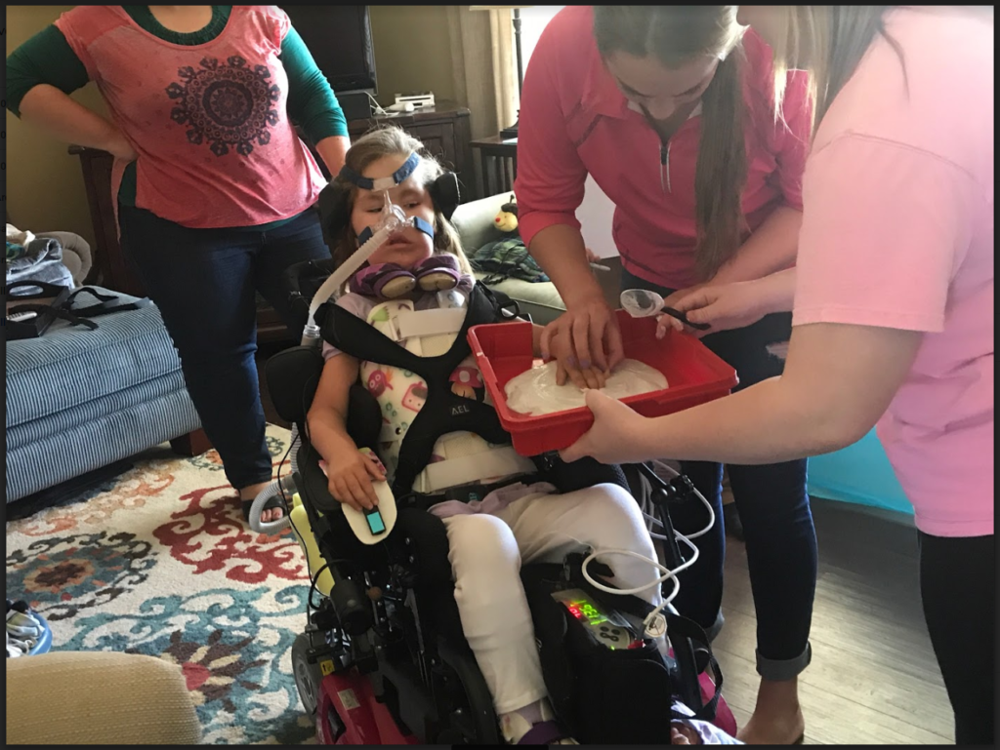
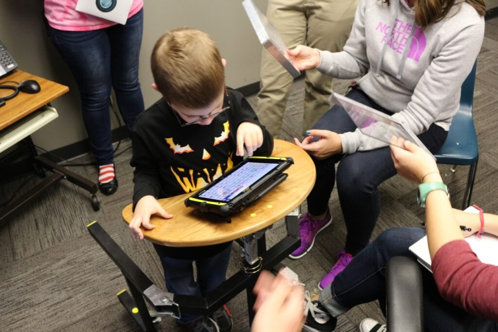
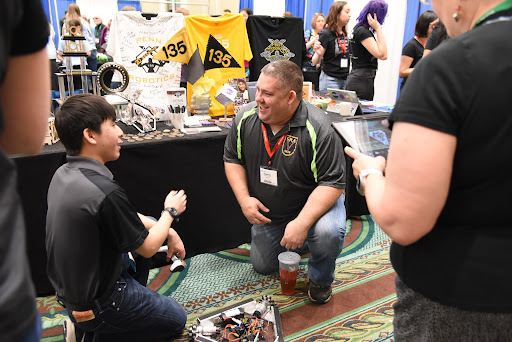
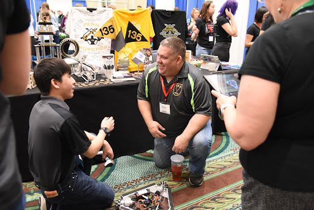
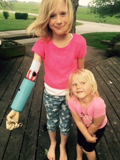
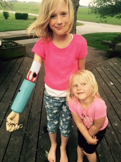

Penn Robotics is continuing to assist our community through our
Mission to Engineer program. This initiative aims to construct
assistive technology (AT) for individuals who don’t have the resources
to acquire it themselves.
Contact
History
Projects
ATIA
Adapt-A-Thon
Connect With Us
The goal of our Mission to Engineer program has always been to make
connections between people in need of Assistive Technology and
people that can help. We want to make that goal a reality by using
responses we get from the Google Form below to connect people in
need of AT to robotics teams and others that can help.
If you or someone you know is in need of AT, or if you have advice
for our program, reach out to our team with the Google Form below.
History


For our fifth consecutive year, Penn Robotics is continuing to
assist our community through our Mission to Engineer program. This
initiative aims to construct assistive technology (AT) for
individuals who don’t have the resources to acquire it themselves.
Mission to Engineer was founded by ATMAkers and Penn Robotics in
2017, all thanks to a family in need of assistive technology. The
primary goal of ATMakes was to introduce those in need of Assistive
Technology to local makers that would be willing to execute the
project that needed to be done for the families in need. Prior to
Mission to Engineer, Penn Robotics was one of the facilities that
accepted the offer to help a family in need -the Hunt Family. Bill
Binko, founder of ATMakers, first introduced Penn Robotics to the
Hunt Family with very high expectations for the future. Upon their
introduction, Team 135 was able to learn more about the diagnosis of
Ella Hunt and the ways that they would be able to help.
Ella was diagnosed with SMA (Spinal Muscular Atrophy)Type 1, a
disease that prohibits her from developing muscle. Unfortunately,
this diagnosis means that Ella is incapable of moving on her own,
including the movement of her vocal cords. Although Ella is
incapable of traditional speech, she is capable of communication
with the use of an amplification device called the Eye Gaze. She
struggles to express herself with her peers due to the challenges
imposed by her condition. Team 135 states that, “We are trying to
improve the quality of her life by developing technological
solutions to everyday problems that people overlook, the ways of
communication and entertainment. Not only are we trying to improve
Ella’s life, but we are trying to further fellow students’
understanding of engineering in the real world.” Shortly after Team
135’s initial greet with Ella and her family, they began the project
known as Engineering Ella. This project has been featured on
multiple different websites, including Bill Binko’s ATMakers, and
Adafruit and is still recognized as the project that started it all.
Our objective is to share Ella’s story and to help provide other
families with the support they deserve.
Projects
In early February of 2021, our team was introduced to a boy named
Cooper New by Joe O’Reilly. Cooper has a rare genetic disorder and
is faced with many obstacles when it comes to development and daily
life. Our Mission to Engineer team, at the time, set out to design
and build a sensory wall that he could use to help build auditory,
sensory, and motor skills. We worked closely with the family to
design the board with Cooper’s needs in mind, and we customized it
to fit his personality.
The sensory board we made is a 6 ft by 4 ft wooden board that has
many different activities on it that he can engage with. The focal
point is a soundboard that incorporates images with labels above
them and 16 buttons that, when pressed, play a sound associated with
the respective image/button pair. This portion of the board was
critical as Cooper is enamored with sound and this feature draws his
interest to the entire board. This sensory tool also encompasses
three different instruments for auditory engagement, puzzle pieces
with tactile objects for sensory engagement, and different types of
door handles for motor skill improvement.
Through the pandemic, Team 135 has worked through many roadblocks
and setbacks as they presented themselves. We were welcomed into the
family’s home on February 9, 2022, in order to install the sensory
board into their basement. We were very thrilled to see the
excitement come from Cooper’s face when we uncovered his new sensory
wall. Cooper’s parents are now able to use this sensory wall for
Cooper’s entertainment as well as development. They utilize
different features to conduct therapy with Cooper. This is typically
difficult as Cooper does not always want to engage with therapy.
However, the sensory wall is full of sounds and other fun tools that
enable Cooper to keep his attention and interest. Once Cooper has
grown out of the sensory wall, the family will pass on the board to
a local Autism center to continue helping individuals for years to
come!
Over the past couple of months, Penn Robotics has been working with
Joe O’Reilly, Magic Wheelchair, Premier Arts, and various other Penn
High School Classes to create a very special project for a very
special boy, Zephan Cantu. Zephan has Cerebral Palsy and is bound to
a wheelchair. His favorite superhero, as well as a nickname, is The
Amazing Hulk, as a testament to all he has gone through due to his
disease.
While this project was a great interdisciplinary opportunity for
Penn students to learn new skills and work with groups they wouldn’t
otherwise work with, it is more than just an academic project. For
five years, Penn Robotics has been working with children with
disabilities, and we have encountered the same issue over and over
again: the lack of inclusiveness for children with disabilities.
Unfortunately, much of the world is not designed with inclusiveness
in mind. The lack of options for Halloween costumes for children in
wheelchairs is what lead to the creation of the Magic Wheelchair
organization in 2008. While progress has been made since then, there
is still very much a demand for products that are made with the
disabled community in mind.
Penn Robotics is incredibly lucky to have the chance to work on this
project and we have been fortunate to get media attention on both a
local and national scale. With this exposure, we are hoping to send
a message of inclusiveness. We don’t want this to be a one-time
event, but rather, something that will spread throughout the nation
to other schools and corporations who will hopefully realize the
importance of embracing diversity and helping the communities that
are so often overlooked.

Last year, we were contacted by Mr. Addison, Isaiah’s gym teacher.
Isaiah is a strong-willed fourth grader that is full of curiosity,
creativity, and desire who also happens to be inflicted with
Arthrogryposis Multiplex Congenita (AMC), a disease that affects the
development of multiple joint contractures. While he and his family
have been thriving on their own, we were contacted because Isaiah
has been getting frustrated in the limited adaptations of the
class’s “scooter game” he could do because of his condition. Soon
after, we scheduled an initial meeting. This was a great chance for
us to learn more about Isaiah and his needs and for them to learn
more about us. From this meeting, we found out that Isaiah was
having trouble with a simple daily task — putting on his socks. We
have created a small sock aid for him and are working on the scooter
adaptation.

Ella has Spinal Muscular Atrophy Type 1 (SMA). This diagnosis
prohibits her from moving on her own and speaking because of the
underdevelopment of body muscle. Team 135’s goal was (and is) to
improve the quality of her life by developing technological
solutions to her everyday problems, such as communication and
entertainment. One of the various projects we did for Ella was
reprogramming her powered wheelchair, with this, Ella had the
autonomy to move her own wheelchair, something most people with SMA
are not able to do. We also worked on a variety of other projects
for Ella, such as a food tube overflow sensor, an arm stabilizer,
and adapting tools.

Braylen has Joubert Syndrome, which is a disease leading to the
underdevelopment of the cerebellar vermis and a malformed brain
stem. This led Braylen to have issues with low muscle tone, leading
to balance and coordination issues and speech impediments. To allow
Braylen to communicate with his peers, he has a communication tablet
called the Accent 800. However, this tablet is 2.4 pounds and far
too heavy for him to carry throughout his day. This reduced the
effectiveness of the device considering he couldn’t take it to
recess, a vital time for him to communicate with his friends. To
solve this problem, Penn Robotics created a mobile table that he
could take anywhere, allowing him to communicate with his peers all
throughout the day.
Our first assistive technology creation was a prosthetic arm
designed to help Grace, a young girl born without half of her right
arm, gain more mobility and independence. Everywhere Grace went, she
would struggle to interact with her peers due to this physical
disability. This was our first ever assistive technology project and
it opened our eyes to a much bigger world around us. We 3D printed a
prosthetic arm for her and used a muscle sensor, Arduino, and servos
to allow her to interact with objects with her new hand.
 

 
